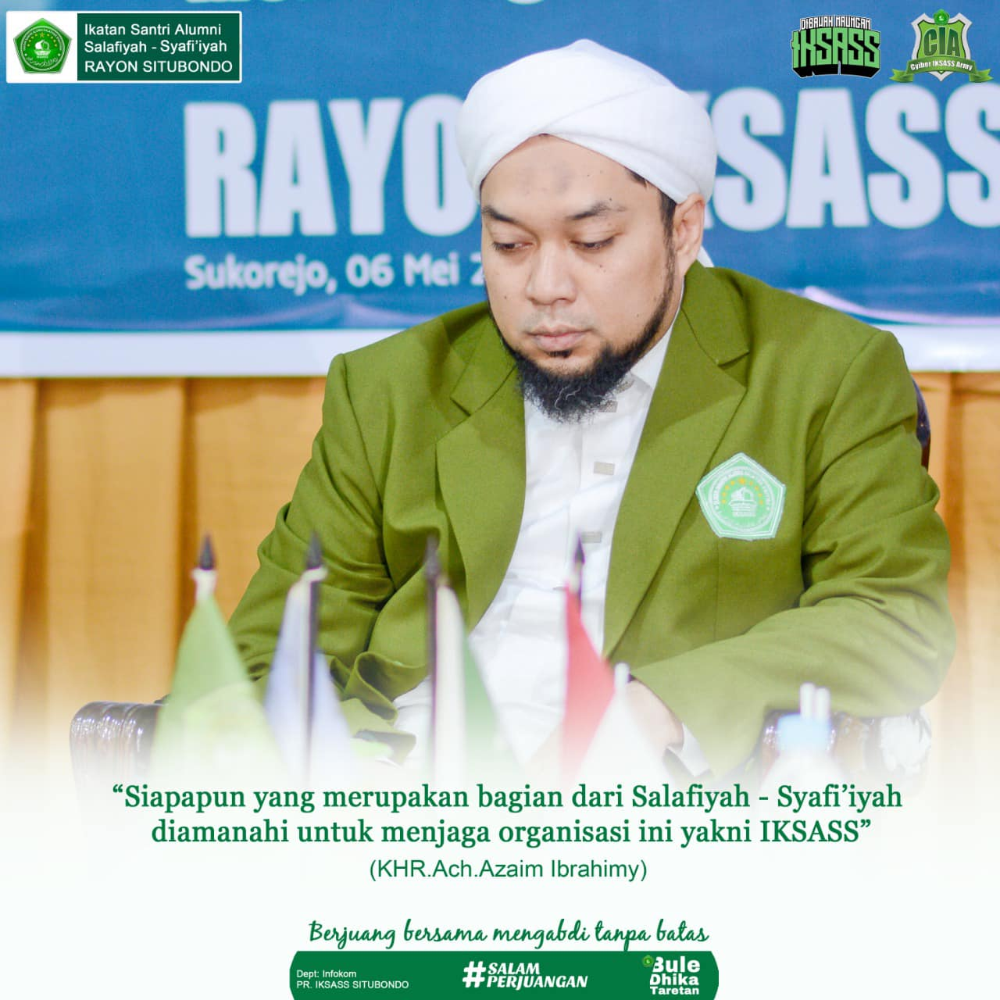

Kaderisasi
Jalan khidmah ideologis: membentuk kader berakhlak, militan, dan siap memikul amanah perjuangan.

Kaderisasi IKSASS bukan sekadar proses pembinaan organisasi, melainkan jalan khidmah yang ditempuh dengan kesadaran ideologis dan militansi perjuangan. Di sinilah kader dibentuk — bukan hanya untuk berkhidmah, tetapi untuk memikul amanah sejarah dan meneruskan cita-cita perjuangan dengan akhlak, keteguhan, dan loyalitas.
“Siapapun yang merupakan bagian dari Salafiyah Syafi’iyah diamanahi organisasi ini, yakni IKSASS.”
— K.H.R. Achmad Azaim Ibrahimy
Maka keterlibatan dalam kaderisasi bukan pilihan administratif, melainkan panggilan khidmah dan amanah yang melekat pada identitas.
Tujuan
Kaderisasi di IKSASS bertujuan membentuk cara berpikir, etika organisasi, dan kemampuan menggerakkan khidmah kolektif secara tertib. Fokusnya bukan pada retorika, tetapi pada konsistensi sikap dan kualitas keputusan di struktur.
- Membentuk kader yang profesional dan militan melalui praktek dan pengabdian masyarakat.
- Membentuk kader dengan intelektual yang berkualitas, dilandasi nilai-nilai keislaman dan kebangsaan.
- Membentuk pribadi kader yang bertanggung jawab serta berakhlakul karimah.
Prinsip Khidmah
- Rasional & sistematis: setiap langkah berbasis argumen, data, dan prosedur.
- Berbasis nilai: khidmah, kebersamaan, ketaatan, keberlanjutan perjuangan, serta ketertiban.
- Terukur: ada tahapan, target kompetensi, dan indikator kesiapan peran.
Peta materi
Manhaj Berpikir
Kerangka berpikir, cara mengambil keputusan, dan standar argumentasi.
Roadmap Pembinaan
Tahapan kaderisasi, target kompetensi, dan indikator peran.
Doktrinasi
Nilai dasar dan arah gerak organisasi.
Prinsip Perjuangan
Empat pilar prinsip yang menjadi fondasi nilai dan sikap.
Mulai dari sini
Jika Anda baru bergabung, mulai dari Manhaj Berpikir lalu lanjut ke Roadmap Pembinaan. Setelah itu, baca Doktrinasi dan Prinsip Perjuangan sebagai fondasi nilai.